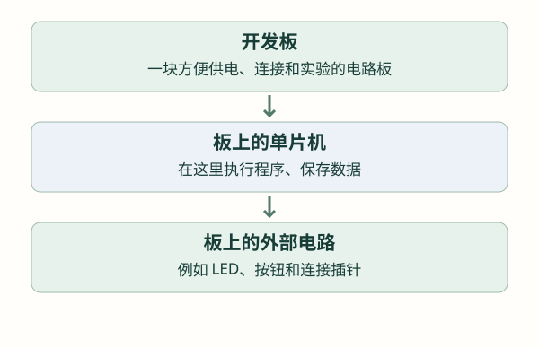
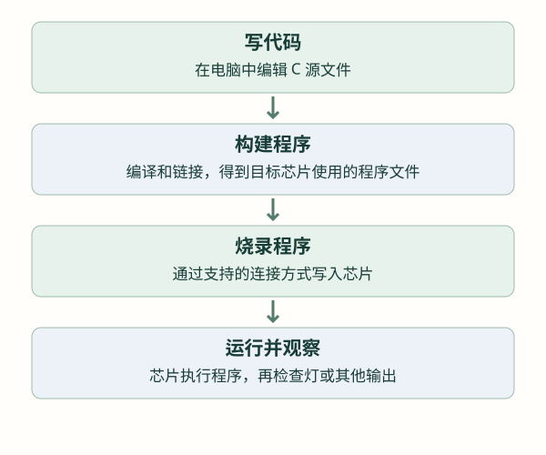
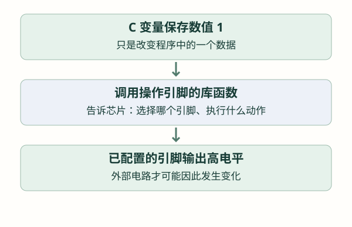

起点：让电路、代码与工具对上号
已经会写 C，但还没接触过单片机？先认识程序将在哪里运行、引脚怎样连接外部电路，以及学习时会用到哪些工具，再去点亮第一盏灯。
第 1 节 · 单片机是什么？开发板又是什么？
以前在电脑上运行 C 程序，输入可能来自键盘，结果可能显示在终端。现在想用程序控制一盏灯、读取按钮，程序就需要与这些电路连接。单片机正适合做这类工作：它是一颗能执行程序、保存数据，并通过引脚连接外部电路的芯片。
1.1 先认识芯片里的三个部分
| 部分 | 先用一句话理解 | 与 C 程序的联系 |
|---|---|---|
| CPU | 按指令执行工作的部分 | 执行运算、判断和函数调用 |
| 存储器 | 保存程序和数据的地方 | 程序需要存放，变量运行时也需要空间 |
| 连接外部的硬件功能 | 帮助芯片读取或控制外部电路 | 后面将通过库函数使用它们 |
把这些功能做在同一颗芯片里，就是“单片机”这个名字可以先传达的意思。以后看到 MCU，可以先把它理解为这里说的微控制器，也就是单片机。
1.2 芯片与开发板不是同一个东西
一颗芯片不能只放在桌上就运行：还需要正确供电，以及让它正常启动所需的电路。开发板把芯片和这些基础电路装在一块板子上，通常还提供便于连接的插针，有些板子自带灯、按钮和调试器。
所以，STM32 是一类芯片的名字；某块 STM32 开发板则是一件包含芯片和周边电路的实物。板上的 USB 插座、灯和按钮不一定直接属于芯片，具体连接要看这块板的说明。

手表主板也是围绕芯片设计的一块电路板，只是连接了屏幕和传感器等更多器件。入门先用简单实验理解一个功能，再回到手表追踪同类功能，阅读负担会小很多。
第 2 节 · 电脑上的 C 文件，怎样变成芯片运行的程序？
在电脑里保存了 main.c，并不会让板子立刻执行它。芯片不能直接把 C 源码当成指令运行，需要先把源码转换成它能执行的程序，再写到芯片里。
2.1 写代码、构建、烧录、运行是四件事

编译负责将源码转换为目标代码；一个工程通常不止一个源文件，链接再将需要的代码和数据组织成程序。开发工具里的 Build 往往会按需要完成这些步骤，本教程把这一整个过程称为“构建”。
烧录是把构建出的程序写入芯片的程序存储区；工具里也可能写作 Download 或 Program。这里的 Download 不是从网站下载资料。写入成功以后，还需要让芯片开始运行，再观察实际功能。
2.2 程序为什么断电后还在，变量却常常回到初始值？
先认识两种常见存储：Flash 常用来保存程序，断电后内容通常还在；RAM 用来存放运行时的数据，断电后不能继续保留原来的内容。程序重新启动时，普通变量会按启动流程重新准备。
这里先区分它们的用途，不需要现在计算各段地址。保存设置、掉电记录等功能，要到后面学习专门的数据保存方法。
第 3 节 · 引脚、电压、高低电平，分别是什么？
3.1 引脚是芯片与电路连接的位置
芯片周围用来连接电路的接点叫引脚。部分引脚用于供电，部分用于连接外部信号。并非每个引脚都能随意拿来控制灯；读板子说明时，要分清电源、地和信号。
STM32 中常见 PA5 这样的信号引脚名称：P 可以先理解为端口引脚，A 表示 A 组，5 表示组内 5 号。它不是说芯片封装上从某个角数起的第 5 条腿。板子插针旁的编号也可能使用另一套名称，接线前要对上对应关系。
3.2 电压要相对于一个参考点说
板子上常能看到 GND，表示电路的地。在本教程的简单低压实验中，把它作为电压参考点。说“某信号是 3.3 V”，通常是说该信号相对于对应 GND 的电压约为 3.3 V。
想象用万用表测电压：黑表笔接参考地，红表笔接测量点，读到的是这两个点之间的电压。因此两块设备连接信号时，还要确认它们按要求连接了参考地，不能只看一根信号线。
3.3 高低电平怎样与 1、0 对应？
数字电路把一定范围内的电压判断为低电平，把另一个范围内的电压判断为高电平。在本教程常见的正逻辑约定中，低对应 0，高对应 1。比如在一个 3.3 V 实验电路里，可以先用“接近 0 V 的低”和“接近 3.3 V 的高”建立直观印象。
真实芯片判断的是电压范围，不要求每次恰好等于 0.000 V 或 3.300 V；具体范围由器件规定。电压落在不保证判断结果的中间范围，也不意味着得到一种可用的“第三个数字”。下一章先使用明确的高、低两种状态。

例如写 int led = 1; 只是在程序里存了一个整数，芯片不知道变量名 led 对应哪盏灯。要改变真实引脚，需要指定硬件对象并使用相应操作。下面一章就从这个缺口开始讲。
第 4 节 · 开发工具分别帮助我们做什么？
不需要第一次就学会所有工具。先把“写程序”“把程序写进去”“与运行中的程序交换数据”区分开，后续才容易知道问题发生在哪一段。
| 工具 | 做什么 | 这时先认识到哪里 |
|---|---|---|
| STM32CubeIDE | 在电脑上编辑、构建并调试 STM32 程序的开发环境 | IDE 是把多种开发功能放在一起的软件；先会找到工程和构建结果 |
| STM32CubeMX | 通过界面选择引脚和外设参数 | 它帮助准备初始化配置，应用功能仍要编写；具体选项随实验讲解 |
| 调试器，例如 ST-LINK | 连接电脑与芯片，支持程序写入、暂停和观察 | 有些开发板已集成，有些需要外接 |
| 串口模块与串口工具 | 让电脑与设备通过串口交换数据 | 到 UART 章再接线和设置；普通 USB 转串口模块不等同于 ST-LINK |
| 万用表 | 测量电压等电气量 | 第一次先按板子说明确认电源与 GND，测量方法需要选对挡位 |
| 逻辑分析仪、示波器 | 观察随时间变化的信号 | 先知道它们能帮助观察高低变化，通信和时序实验中再学习使用 |
4.1 “调试”是怎样看见程序正在做什么的？
程序运行很快，肉眼看不到它执行到哪一行。调试工具可以让它在指定位置暂停，这个暂停位置叫断点。暂停后可以查看变量，再让程序继续，或者一步步执行，这叫单步。
现在先理解这些动作的用途：如果灯不亮，可以检查程序是否执行到控制灯的位置。具体怎样启动调试、在哪里设置断点，等有明确实验目标时再操作。暂停也会改变运行时序，不能把暂停时观察到的现象直接当作正常连续运行结果。
4.2 同样插着 USB，功能可能不同
板上一个 USB 接口可能用于供电，也可能连接调试器、串口转换电路，或直接连接单片机的 USB 功能；具体由板子设计决定。所以“电脑已插 USB”不能单独证明程序已经烧录或串口已经连通。先查接口旁标记与开发板说明，再判断它承担什么工作。
第 5 节 · 已经有 C 基础，进入 HAL 工程先看哪里？
阅读顺序：HAL 库 → 常见整数类型 → 工程中的文件位置。
5.1 库替我们完成哪些工作？
如果每次点灯都要从芯片内部控制细节开始写，第一步就会很长。ST 提供了一套叫 HAL 的 C 库，英文全称 Hardware Abstraction Layer，可以理解为硬件抽象层。它把许多硬件操作包装成函数，应用按接口调用这些函数。
本教程先采用 HAL：先理解一个硬件功能是什么，再学习 CubeMX 中选什么，随后介绍函数作用、参数、返回值，最后把代码放进实验。寄存器是芯片内部保存控制与状态信息的位置；现在只认识这个名称，不要求先直接操作它。
5.2 uint8_t、int16_t 这些名字是什么意思？
进入 HAL 工程后，经常会看到 uint8_t，而不只是熟悉的 int。先从它能保存多少数据讲起：在本教程使用的 STM32 平台上，1 字节（byte）等于 8 位（bit）。每一位可以是 0 或 1，八位共有 256 种组合；从全 0 到全 1，如果都用来表示非负整数，范围就是 0～255。
uint8_t 正是这样的整数类型。把名字拆开看：
- u：unsigned，表示无符号，不用来表示负数。
- int：integer，表示整数。
- 8：这个类型恰好占 8 位，在 STM32 上就是 1 字节。
- _t：类型名常用的后缀，提示整个名字是一个类型。
所以 uint8_t data; 表示声明一个名为 data 的变量，它能保存 0～255。去掉开头的 u，得到 int8_t，它可以表示负数，但仍然只有八位，范围改为 −128～127。两者占用的空间相同，能表示的数值范围不同。
| 类型 | 位数 | STM32 字节数 | 能保存的整数范围 | 常见用途 |
|---|---|---|---|---|
uint8_t | 8 位 | 1 | 0～255 | 一个通信字节、一个寄存器字节 |
uint16_t | 16 位 | 2 | 0～65535 | 超过 255 的非负计数 |
uint32_t | 32 位 | 4 | 0～4294967295 | 更大的计数、毫秒时间值 |
int8_t | 8 位 | 1 | −128～127 | 范围较小、可能为负的整数 |
int16_t | 16 位 | 2 | −32768～32767 | 可能为负的传感器原始值 |
int32_t | 32 位 | 4 | −2147483648～2147483647 | 需要更大正负范围的整数 |
这些类型由标准头文件 stdint.h 提供。先包含它，再按“类型名 变量名 = 初始值”声明变量；用法与以前的 int 变量一样，不需要自己实现这些类型。
普通变量声明示例 · 所有初始值都在对应类型的范围内
#include <stdint.h>
uint8_t register_byte = 0x68;
uint16_t sample_count = 1000;
uint32_t total_count = 1000000;
int8_t adjustment = -5;
int16_t signed_sample = -1200;
int32_t total_offset = -100000;第一行变量保存十六进制 0x68，也就是十进制 104，能装进 uint8_t。sample_count 要保存 1000，已经超过 255，因此选 uint16_t；total_count 要保存一百万，选 uint32_t。下面三行要保存负数，分别选择范围够用的有符号类型。
熟悉的 int 有多宽，由目标平台与编译器约定；本项目 STM32 工具链中的 int 为 32 位，不能把这个结论直接套到所有平台。uint16_t、int32_t 这类名字则明确约定 16 位、32 位，适合在读写固定字节数时表达清楚数据宽度。
选类型时，先判断要不要负数，再判断最大、最小值是否放得下。uint8_t 装不下 1000，遇到这种情况，就应换成范围够用的类型。
5.3 第一次打开工程，只找这几个位置
| 位置 | 先关注什么 | 此时不用做什么 |
|---|---|---|
Core/Src/main.c | 找到 main 与已有初始化流程，再找到主循环 | 不用从第一行起把整个文件读透 |
Core/Inc/ | 应用头文件通常放在这里，用来提供声明 | 不用把库的类型全部抄进自己的文件 |
Drivers/ | 本项目所用的芯片支持代码与 HAL 库 | 先通过接口使用，不直接改第三方库来点灯 |
SmartWatch.ioc | 本工程的 CubeMX 配置文件 | 不要把改配置与已更新应用逻辑混为一件事 |
主循环常写作 while (1)：条件一直成立，就不断执行循环体。很多入门裸机程序在完成初始化后，靠这个循环反复检查输入、更新输出。这里的“裸机”可以先理解为暂时不引入操作系统来安排任务，后面再学习更复杂的组织方式。
教程中的代码会说明放在文件作用域、初始化之后还是主循环里；不同位置作用不同。看到一个新 HAL 函数时，先读它前面的接口说明，不需要提前猜类型和参数。手表现有主程序已经包含多项功能，学习实验使用独立基础工程，避免直接用一个点灯循环替换现有应用。
main 前面还有程序吗？
有。芯片启动后，会先执行启动相关代码，准备运行环境，再到 C 程序的 main。这部分涉及启动文件、存储安排等内容。第一次先沿已经能运行的基础工程学习；向量表、启动和内存细节在后续需要时展开，不作为本章的阅读门槛。
第 6 节 · 回到项目：手表由哪几部分协作？
先认识分工，不要求现在读懂三个程序：
| 部分 | 负责的主要工作 | 以后在哪里学习 |
|---|---|---|
| STM32U575 主控 | 连接屏幕和传感器，运行设备侧应用 | GPIO 等主线课程，以及 LVGL、AI 支线 |
| CH582M 通信芯片 | 承担手表与手机之间的蓝牙通信，并与主控交换数据 | UART、协议与无线通信课程 |
| 手机 App | 在手机上显示和操作设备相关功能 | App 开发支线 |
它们运行在不同硬件上，不是把一个 main 函数分别改名。先从 STM32 端最简单的引脚输入输出学起；接着学习芯片之间怎样传递字节，之后才把蓝牙和手机端接进来。
想先看目录时，可以浏览 STM32 固件说明、CH582M 固件说明和 App 说明。第一次只看各自用途，不把完整手表工程的构建和运行当作学习 GPIO 的先决条件。
学 GPIO 前，做一次准备与自查
暂时没有设备，也能完成的部分
- 用自己的话区分单片机与开发板，指出程序实际在哪颗芯片上执行。
- 把“编辑源码、构建、烧录、运行观察”按顺序写出来，说明每一步得到什么。
- 在开发板说明或引脚图上寻找 GND、电源和信号引脚，区分引脚名称与排针序号。
- 在工程中找到 main.c 和主循环即可，暂时跳过还未学过的外设初始化细节。
具备独立实验板以后，再完成的部分
记录开发板型号、芯片型号、供电方式、LED 和按钮的实际接法，并确认所用基础工程能够运行。不要默认所有板子的灯都接 PA5、按钮都接 PB0；后续教程使用这些名称时，会明确它们是独立实验的约定。
检查理解
参考与继续阅读
- ST · GPIO 硬件配置 AN4899
- ST · STM32U5 HAL 官方源码
- C11 委员会草案 N1570：§7.20.1.1 固定位宽整数类型、§7.20.2 数值范围，供查阅。
参考用于核对概念和接口；不同系列、库版本与开发板的参数不可直接互换。课程按本仓库现状说明项目，完整资料索引见 来源与版本。